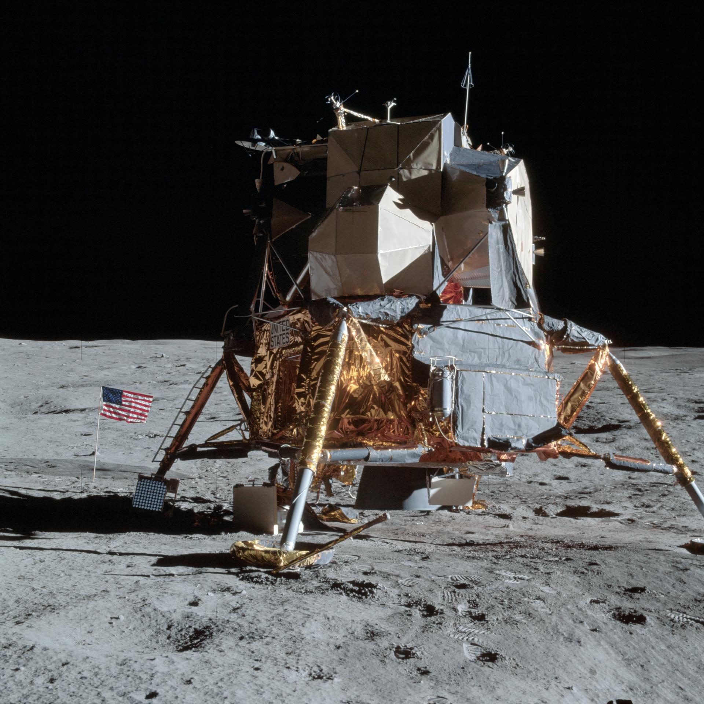

Apollo 14 was NASA's third successful Moon landing mission and the first lunar landing attempted after the Apollo 13 accident. Launched on January 31, 1971, the mission carried Commander Alan Shepard, Command Module Pilot Stuart Roosa, and Lunar Module Pilot Edgar Mitchell. The primary goal was to land in the Fra Mauro region, the same location that Apollo 13 had been forced to abandon.
The mission was closely watched by NASA officials and the public because it represented an opportunity to demonstrate that the problems encountered during Apollo 13 had been successfully addressed. A successful mission would restore confidence in the Apollo program and allow lunar exploration to continue.
Apollo 14 launched successfully aboard a Saturn V rocket and traveled to the Moon without major problems. During the mission, the crew encountered difficulties docking with the Lunar Module Antares, but repeated attempts eventually succeeded.
After entering lunar orbit, Shepard and Mitchell transferred into Antares and began their descent toward the Fra Mauro Highlands. The landing proceeded successfully, making Apollo 14 the third mission to place humans on the Moon.
The Fra Mauro region was of great scientific interest because researchers believed it contained material ejected during the formation of the Imbrium Basin, one of the Moon's largest impact structures.
During two moonwalks, Shepard and Mitchell conducted scientific experiments, collected rock samples, and explored the surrounding terrain. They traveled using a hand-pulled equipment cart rather than a rover, since the Lunar Rover had not yet been introduced.
One of their objectives was to reach Cone Crater, a large impact crater that could provide valuable geological information. Although they came very close, difficult terrain and limited visibility prevented them from realizing they had nearly reached the rim.
The astronauts collected more than 90 pounds of lunar material, including rocks that helped scientists better understand the Moon's early history.
Apollo 14 is remembered for one of the most famous moments in spaceflight history. During the mission, Shepard attached a golf club head to a sampling tool and hit two golf balls across the lunar surface.
The playful demonstration became an iconic symbol of human exploration and remains one of the most recognizable moments from the Apollo era.
Apollo 14 restored confidence in NASA's ability to conduct lunar missions after Apollo 13. The mission achieved all major objectives and returned valuable scientific data to Earth.
Its success allowed NASA to move forward with even more ambitious lunar exploration missions, including the introduction of the Lunar Roving Vehicle on Apollo 15.